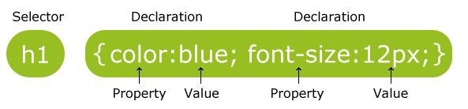
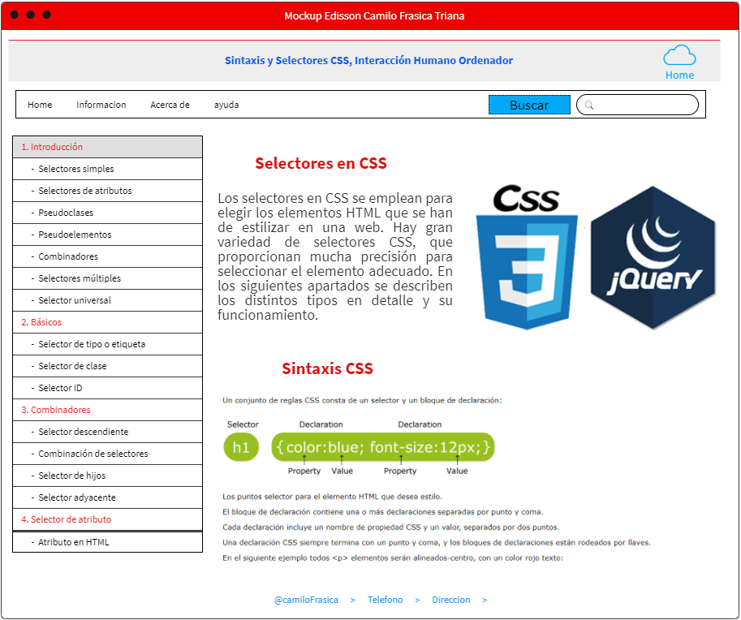

Proposito del sitio
El propocito del sitio este sitio es aprender el uso de CSS en html lod tipos de selectores que ecisten y como interactuan con el humano y ordenador
Sintaxis CSS
Un conjunto de reglas CSS consta de un selector y un bloque de declaración

- Los puntos selector para el elemento HTML que desea estilo.
- El bloque de declaración contiene una o más declaraciones separadas por punto y coma.
- Cada declaración incluye un nombre de propiedad CSS y un valor, separados por dos puntos.
- Una declaración CSS siempre termina con un punto y coma, y los bloques de declaraciones están rodeados por llaves.
En el siguiente ejemplo todos < p > elementos serán alineados-centro, con un color rojo texto:
Ejemplo:
p {
color: red;
text-align: center;
}
1. Selectores simples
Seleccionan los elementos por el nombre del tipo de elemento, class o su id.
© 2005-2021 Mozilla and individual contributors. Content is available under these licenses.
Diseño sobre: AdminBSB y Material DesignActualizado 201903/24
2. Selectores de atributos
Seleccionan los elementos por los valores de sus atributos.
© 2005-2021 Mozilla and individual contributors. Content is available under these licenses.
Diseño sobre: AdminBSB y Material DesignActualizado 201903/24
3. Pseudoclases
Seleccionan los elementos por el estado en que se encuentran, cómo haber aparecido al pasar el ratón, o deshabilitado o seleccionado, o por ser el primer hijo de su
padre en el árbol DOM. Las pseudoclases se definen añadiendo dos puntos antes de la pseudoclase concreta. En el caso de existir selectores de etiqueta,
id o clases, estas se escribirían a su izquierda.
© 2005-2021 Mozilla and individual contributors. Content is available under these licenses.
Diseño sobre: AdminBSB y Material DesignActualizado 201903/24
4. Pseudoelementos
Selecciona los elementos por su situación en relación a otro elemento, por ejemplo: la primera palabra de cada párrafo, o el contenido que se encuentra justo después
de un elemento. De vez en cuando se utilizan dos puntos dobles (::) en vez de solo uno (:), esto forma parte de CSS3 y de un intento para distinguir
pseudoelementos de pseudoclases.
© 2005-2021 Mozilla and individual contributors. Content is available under these licenses.
Diseño sobre: AdminBSB y Material DesignActualizado 201903/24
5. Combinadores
No son en sí mismos selectores, sino formas de combinar dos o más selectores de forma práctica para una selección especial. Por ejemplo, se pueden seleccionar
párrafos que sean descendientes de divs, o párrafos situados justo después de títulos.
© 2005-2021 Mozilla and individual contributors. Content is available under these licenses.
Diseño sobre: AdminBSB y Material DesignActualizado 201903/24
6. Selectores múltiples
Tampoco son selectores en sí mismos; se pueden agrupar múltiples selectores en la misma regla CSS separados por comas, para aplicarlos a una de las declaraciones
o a todos los elementos seleccionados por estos selectores.
© 2005-2021 Mozilla and individual contributors. Content is available under these licenses.
Diseño sobre: AdminBSB y Material DesignActualizado 201903/24
Mockup
